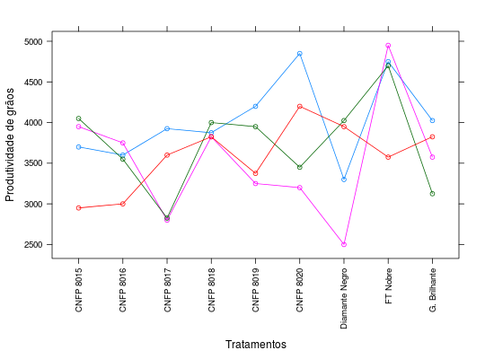

Dados do ensaio 1 de um experimento em DBC de competição de cultivares de feijão do grupo preto. Este ensaio foi realizado no município de Senador Canedo (GO). Houveram três cultivares testemunhas e mais seis em cada ensaio. Cada experimento foi conduzido no período de inverno, sob irrigação por aspersão. Os dados são relativos à produtividade de grãos, em kg/ha.
Um data.frame com 36 observações e 3 variáveis, em que
cultblocoprodZIMMERMANN (2004), Tabela 12.19, pág 258.
library(lattice) data(ZimmermannTb12.19)#> Warning: data set ‘ZimmermannTb12.19’ not foundstr(ZimmermannTb12.19)#> 'data.frame': 36 obs. of 3 variables: #> $ cult : Factor w/ 9 levels "CNFP 8015","CNFP 8016",..: 1 2 3 4 5 6 7 8 9 1 ... #> $ bloco: Factor w/ 4 levels "1","2","3","4": 1 1 1 1 1 1 1 1 1 2 ... #> $ prod : num 3700 3600 3925 3875 4200 ...xyplot(prod ~ cult, data = ZimmermannTb12.19, groups = bloco, type = "b", xlab = "Tratamentos", ylab = "Produtividade de grãos", scales = list(x = list(rot = 90)))aggregate(prod ~ cult, data = ZimmermannTb12.19, FUN = function(x) { c(mean = mean(x), var = var(x)) })#> cult prod.mean prod.var #> 1 CNFP 8015 3662.500 247291.667 #> 2 CNFP 8016 3475.000 107500.000 #> 3 CNFP 8017 3287.500 318541.667 #> 4 CNFP 8018 3881.250 6822.917 #> 5 CNFP 8019 3693.750 206822.917 #> 6 CNFP 8020 3925.000 560833.333 #> 7 Diamante Negro 3443.750 501822.917 #> 8 FT Nobre 4493.750 386822.917 #> 9 G. Brilhante 3637.500 150625.000